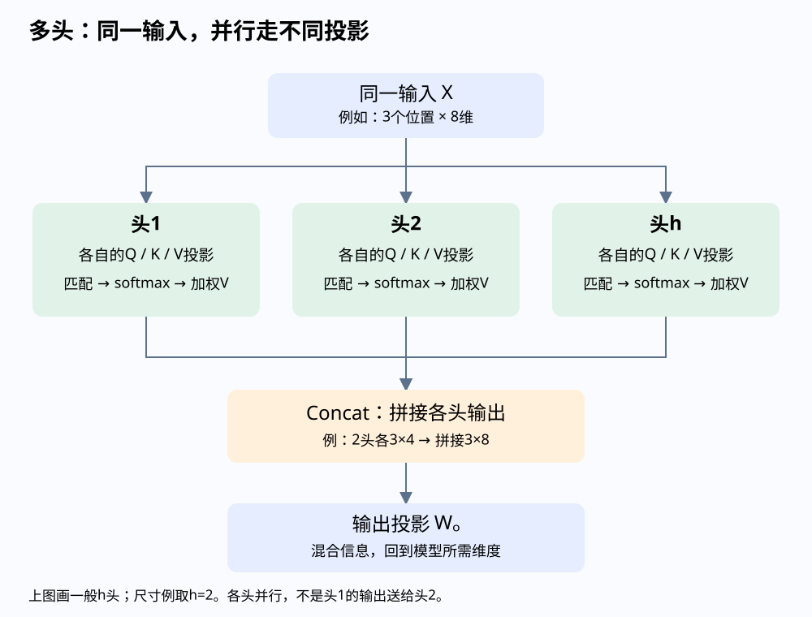

06 / MULTI-HEAD STUDIO
同一句输入，让两个头各看一遍。
上一课学的是一次匹配与汇总。这一课把它复制成两条并行路线，使用不同投影，再把结果接起来。
把语义示意接到正式结构

先认清：什么相同，什么不同？
| 对象 | 头1 | 头2 |
|---|
| 原始输入 | 同一组X：位置A=[1,0]，位置B=[0,1] |
| 查询位置 | 都从位置B发起查询 |
| 查询投影 | 保持坐标原样，Q=[0,1] | 滑块逐渐交换坐标，从[0,1]到[1,0] |
| Key和Value | 本玩具例保持原样，只改变Q方便观察 |
与第5课相同，仍是点积、除以√2、softmax和加权求和；本课将输入缩成单位向量，方便直接看出每个位置的贡献。真实投影参数从训练中学得，此处人为设定。
先预测，再拖动
头2完全交换查询坐标后，会更偏向A还是B？先观察两头权重，再观察两份输出怎样进入拼接。
从图形到矩阵形状
| 阶段 | 本实验的一个查询 | 含义 |
|---|
| 每个头输出 | 1×2 | 每头独立汇总出两个数 |
| Concat拼接 | 1×4 | 头1两个数后面接上头2两个数，不相加 |
| 输出投影 | 1×4乘4×2，得到1×2 | 将两头信息混合到需要的输出维度 |
本实验输出投影特意设成对应维度各取一半，因此结果等同平均。一般的可学习输出投影不固定做平均，也不保证每个头都有可命名的语义职责。
原视频与深入材料
保留的完整推导、算例与来源 → · 原论文§3.2.2与图2。多头数值演示为编辑教学补充，非作者实验复刻。
检查这次操作，你真的看懂了吗？
图中路线A找人物、路线B找物品，是否真实模型每个头都有这种固定职责？
答案与理由
不是。教学路线解释并行关系的动机；真实头由可学习投影形成，未必有明确可命名职责。